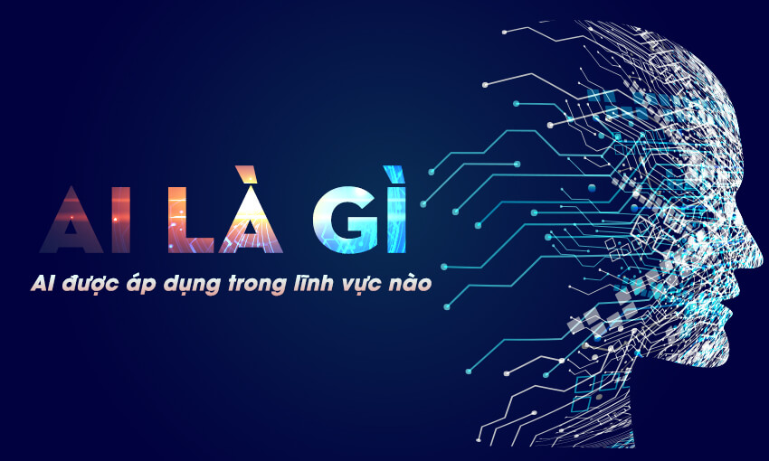

Trí tuệ nhân tạo (AI) đang là một chủ đề siêu hot hiện nay trong lĩnh vực marketing.
Theo một nghiên cứu của Teradata, 80% doanh nghiệp báo cáo rằng tổ chức của họ đã có một số dạng AI trong sản xuất. Nghiên cứu cũng tiết lộ rằng một trong những lĩnh vực được lên kế hoạch đầu tư vào AI cho các thương hiệu là trải nghiệm khách hàng.
Phân tích dự đoán là gì?
Phân tích tiếp thị dự đoán là một nhánh của phân tích nâng cao khai thác tất cả dữ liệu lớn đó để dự đoán các sự kiện hoặc kết quả trong tương lai. Nó tích hợp các kỹ thuật khác nhau từ khai thác dữ liệu, thống kê, mô hình hóa, học máy và trí tuệ nhân tạo để xử lý và phân tích các tập dữ liệu khác nhau nhằm mục đích phát triển các dự đoán.
Hiểu nhu cầu của đối tượng mục tiêu là cốt lõi của mọi chiến lược tiếp thị thành công. Với AI, bạn có thể hiểu rõ hơn về hành vi của chúng và dự đoán những gì chúng có khả năng tìm kiếm.
Cá nhân hóa là vô cùng quan trọng đối với lòng trung thành của khách hàng. Đó là bởi vì người tiêu dùng có nhiều khả năng mua hàng hơn nếu bạn cung cấp cho họ thứ gì đó mà họ thực sự thích hoặc đang tìm kiếm. Xét cho cùng, nếu bạn đang đạt được những gì mình muốn, bạn sẽ không có khả năng chuyển sang thương hiệu của đối thủ cạnh tranh.
Để cá nhân hóa thành công, điều quan trọng là phải hiểu sở thích của khách hàng. Thay vì thu thập thủ công lịch sử của từng người dùng, AI có thể giúp bạn khám phá chính xác những gì khách hàng của bạn thích một cách nhanh chóng và dễ dàng. Và sau đó, dựa vào đó, bạn có thể điều chỉnh nội dung mà bạn cho họ xem hoặc các sản phẩm bạn đề xuất cho họ.
Bất cứ khi nào khách hàng thực hiện bất kỳ hành động nào - xem một mặt hàng, mua một mặt hàng, để lại đánh giá - các thuật toán học sâu sẽ ghi lại hành động đó. Sau đó, khi bạn phân tích thông tin này, bạn có thể tạo các nhân vật khách hàng cụ thể được phân đoạn theo độ tuổi, vị trí, sở thích và hơn thế nữa.
Với các phân đoạn này, bạn có thể cá nhân hóa tốt hơn các ưu đãi mà bạn cung cấp cho khách hàng của mình. Thay vì làm theo một kiểu mẫu phù hợp với tất cả mọi người, bạn có thể thiết kế riêng để đáp ứng từng yêu cầu của họ. Vì vậy, nếu bạn có năm tính cách khách hàng khác nhau, bạn có thể đưa ra năm chương trình khách hàng thân thiết khác nhau. Mỗi người có thể có một khuyến khích đáp ứng nhu cầu cụ thể của phân khúc đối tượng cụ thể.
Một cách khác mà AI có thể biến đổi các chương trình khách hàng thân thiết truyền thống là thông qua số hóa chúng. Với chatbots, bạn có thể chuyển chương trình khách hàng thân thiết của mình trực tuyến.
Một lợi ích khác chưa được tận dụng của AI là đổi mới sản phẩm. Với trí tuệ nhân tạo, bạn có thể hiểu rõ hơn những gì khách hàng của bạn muốn. Vậy tại sao không sử dụng kiến thức này để thiết kế sản phẩm đáp ứng yêu cầu của họ?
Hãy cho bộ phận R & D của bạn biết khách hàng của bạn đang tìm kiếm điều gì để họ có thể đưa ra các giải pháp giải quyết các điểm khó khăn cụ thể của đối tượng của bạn. Đó là một cách tuyệt vời để có được lợi thế so với các đối thủ cạnh tranh của bạn.
Dự án “Reimagine Retail” của Tommy Hilfiger là một ví dụ xuất sắc về cách trí tuệ nhân tạo có thể giúp bạn đổi mới. Họ đã sử dụng các công cụ nghiên cứu AI để hiểu các xu hướng mới nhất trong ngành và đánh giá cách khách hàng xem sản phẩm của họ.
Họ cũng sử dụng công nghệ này để xác định các chủ đề chính về màu sắc, hoa văn, kiểu dáng và bóng, đồng thời AI cho phép họ phân tích một cơ sở dữ liệu khổng lồ về hình ảnh và văn bản chỉ trong vài phút. Nhiệm vụ phân tích kết quả này hầu như không thể đối với các nhà thiết kế của họ.